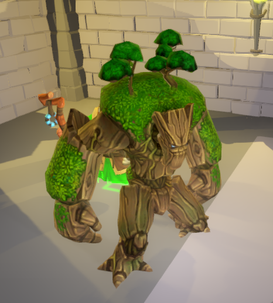

Welcome!
Creature Combat is a turn-based game that challenges you to defeat all the other wizards in the dungeon arena. Thank you for playing my game!
How to play
Game Configuration
Wizards
To begin the game, first select how many wizards are taking part in this tournament. To do this, enter a number between 2 and 8.
(clicking the up and down arrows also changes the number of starting wizards)
Once you're happy with the number of participants, click
Naming and colours
It's important to know who is playing and who your opponents are! Each wizard can enter their name here by selecting on the left and modifying the details on the right:
Select a colour from the list available; it's important to also look the part!
Here, humans can also choose to allow the computer to play by checking the AI option ; be careful, expect no mercy!
(you may also configure the game to play using only AI wizards too!)
When all wizards are named and have an appropriate robe colour, go right ahead and click to continue.
Playing the Game
The Wizard's Turn
Play begins immediately with the first wizard (human or AI!). Wizards have been placed in an appropriate location depending on the number of opponents and have also been given a random selection of spells that can be used to summon creatures that fight for you!
Wizards controlled by AI can skip this next bit…
Let's play!
Interacting with the game
At the beginning, only a player's wizard is available as they haven't summoned any creatures yet. A wizard (and later summoned creatures) can take actions, like moving around, attacking and more…
Navigating the arena
Before going further, let's take a moment to take a look around the arena.
- To rotate the camera, press the middle mouse button and move the mouse left and right (or swiping on a trackpad). The keyboard 'Q' and 'E' keys (on a qwerty keyboard) rotate too.
- Right-click and hold while dragging the mouse around pans the view (shift+swipe on a trackpad). Keyboard controls are WASD.
- Pressing 'F' on the keyboard will move the camera back to the wizard under your control.
Notice the position of other wizards in the arena; these are your main opponents! Let's move on..
Moving
To move around, click the wizard; this will show a green icon that means they're selected. Notice the game also shows the actions they may perform:
To navigate around the arena, select the action. The game shows how far the selected wizard can move (wizards can only move a single cell!).
To move to another location, click the desired cell; the wizard will move!
Casting a Spell
This is how a wizard can defend themselves and go on the offence! Click the action button; the game highlights available cells as a possible spell target.
Think about the surrounding area - later in the game, a wizard may wish to obstruct the path of an enemy by casting a spell in their way, or perhaps a particular direction is closer to another wizard making it easier to attack.
Click on a target cell. A spell selection window appears!
- Spells: these are the spells the wizard knows, assigned when the game began. A spell may also show a quantity e.g. "Ent (2)" means this wizard has two Ent (a large tree-like creature) spells!
- Description: shows details about the selected spell, e.g. its movement range or attack strength. Most important is Cast Chance that indicates how likely a spell is to succeed; typically tougher (meaning undead or stronger) creatures are harder to cast.
- Illusion: this is also important; creating an illusion ignores cast chance. That is, the spell is guaranteed to work... but more on that later!
When a wizard is happy with their choice, click . A wizard can also change their mind and may perform another action if they're able to do so, perhaps deciding on a spell later (or not at all!).
Depending on the success of the spell (as your first spell, choose a high cast chance!), the wizard now has a creature!

When first summoned, a creature can't really do anything yet...
Illusions
As mentioned, an illusion ignores the casting chance meaning that a spell will 100% work. An illusion is the same as any other creature, with one exception; they're vulnerable to the disbelieve spell.
Disbelieve
Wizards have a special ability, and that's to disbelieve a creature. Some creatures have a low cast chance that may seem impossible to cast successfully so a player may have summoned an illusion! When cast, if the creature was an illusion, they're instantly removed from the game!
Note that a wizard can either cast a spell or disbelieve but not both!
End Turn
That's all you can do for now so to allow play to continue with the next wizard, click . You'll
be asked if that's okay so just click  for now and play on!
for now and play on!
You can always cancel here too just in case you've forgotten to do something!
Your Next Turn
Play continues with other wizards, who may cast spells and move around the board. They may even try to disbelieve the creature summoned on your first turn (if you cast a spell).
This turn should play out as your first turn, only you may have an additional creature to use too! Your creatures are highlighted so take a moment to take a look around the board and when you're ready, select a creature as you would the wizard by clicking on them.
The creature's actions are shown the same way a wizard's actions are. The creature (or even the wizard!) may be able to attack.
Attack
Attack works like other actions, by first selecting the action itself if available. Reasons a creature can't attack could be because it is their first turn, or they're too far away from an enemy creature or wizard. They must be located next to an enemy to attack them.
Assuming the creature can attack, click the highlighted space occupied by the enemy. The creature will attack the enemy!
Note that attacking a wizard should be a priority. Defeating a wizard also removes their creatures from the game!
Winning
The game is won by destroying every opponent wizard, it's that easy (or is it?).
Hints and Tips
- An illusion has a 100% cast chance.
- Attacking ends a unit's turn so consider moving first!
- Except for wizards, wizards are cool.
- A ranged attack doesn't prevent moving either so certain creatures are capable of moving, attacking and shooting!
- Undead creatures can only be attacked by other undead creatures!
- The wizard's casting ability is common; e.g. disbelieve or cast a creature spell, but not both.